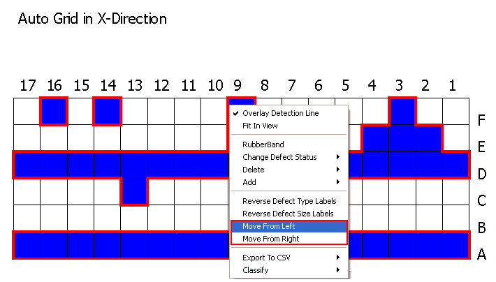
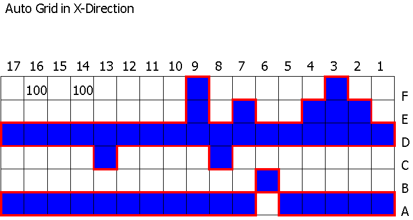
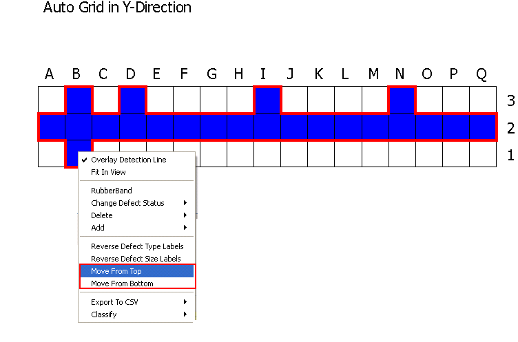
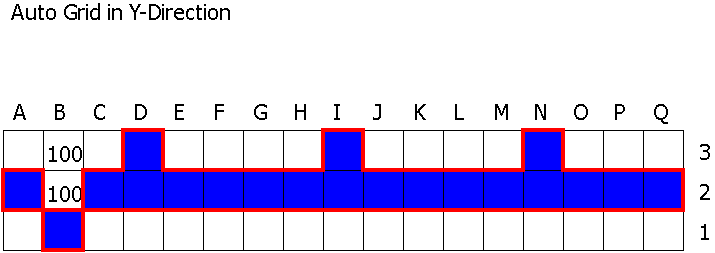

You can move
the detection line in the right or left direction as well as top
to bottom.
Procedure
- To move the detection line
from left to right:
- Detect
the grid in the X-direction and right-click on the detection line
graph. A menu appears.
- To move detection line from
left-most position, select Move
From Left from the menu.
- To move detection line from
right-most position, select Move
From Right from the menu.
Figure 1 shows an example of Move From Left on
a detection line graph.
Figure 1. Move Detection Line Horizontally
After moving the
detection line from the left to the current mouse pointer position,
a detection line is displayed as shown in Figure 2.
Figure 2. Results After Moving
Detection Line from Left
- If the left detection line
crosses the right detection line, then a message box is displayed:
Left Detection Line crosses Right.
Do you wish to continue changing status?
- If
you click OK in the message
box, the status of the real defects on the left of the selected
defect changes to non-real defects. If you click Cancel, there will be no change.
- To move the detection line
from top to bottom:
- Detect the grid in the Y-direction
and right-click on the detection line graph. A menu appears.
- To move detection line from
the top position, select Move From
Top from the menu.
- To move detection line from
bottom position, select Move From
Bottom from the menu.
Figure 3 shows an example of Move From Top on
a detection line graph.
Figure 3. Move Detection Line Vertically
After moving the
detection line from the top to the current mouse pointer position,
a detection line is displayed as shown in Figure 4.
Figure 4. After Moving Detection
Line from Top
- If the top detection line
crosses the bottom detection line, then a message box is displayed:
Top Detection Line crosses Bottom.
Do you wish to continue changing status?
- If you click OK in the message box, the
status of the real defects above the selected defect changes to
non-real defects. If the you click Cancel,
there will be no change.